The Momocs' PCA plotter with morphospaces and many graphical options.
Usage
# S3 method for PCA
plot(
x,
fac,
xax = 1,
yax = 2,
points = TRUE,
col = "#000000",
pch = 20,
cex = 0.5,
palette = col_solarized,
center.origin = FALSE,
zoom = 1,
xlim = NULL,
ylim = NULL,
bg = par("bg"),
grid = TRUE,
nb.grids = 3,
morphospace = TRUE,
pos.shp = c("range", "full", "circle", "xy", "range_axes", "full_axes")[1],
amp.shp = 1,
size.shp = 1,
nb.shp = 12,
nr.shp = 6,
nc.shp = 5,
rotate.shp = 0,
flipx.shp = FALSE,
flipy.shp = FALSE,
pts.shp = 60,
border.shp = col_alpha("#000000", 0.5),
lwd.shp = 1,
col.shp = col_alpha("#000000", 0.95),
stars = FALSE,
ellipses = FALSE,
conf.ellipses = 0.5,
ellipsesax = FALSE,
conf.ellipsesax = c(0.5, 0.9),
lty.ellipsesax = 1,
lwd.ellipsesax = sqrt(2),
chull = FALSE,
chull.lty = 1,
chull.filled = TRUE,
chull.filled.alpha = 0.92,
density = FALSE,
lev.density = 20,
contour = FALSE,
lev.contour = 3,
n.kde2d = 100,
delaunay = FALSE,
loadings = FALSE,
labelspoints = FALSE,
col.labelspoints = par("fg"),
cex.labelspoints = 0.6,
abbreviate.labelspoints = TRUE,
labelsgroups = TRUE,
cex.labelsgroups = 0.8,
rect.labelsgroups = FALSE,
abbreviate.labelsgroups = FALSE,
color.legend = FALSE,
axisnames = TRUE,
axisvar = TRUE,
unit = FALSE,
eigen = TRUE,
rug = TRUE,
title = substitute(x),
box = TRUE,
old.par = TRUE,
...
)Arguments
- x
PCA, typically obtained with PCA- fac
name or the column id from the $fac slot, or a formula combining colum names from the $fac slot (cf. examples). A factor or a numeric of the same length can also be passed on the fly.
- xax
the first PC axis
- yax
the second PC axis
- points
logical whether to plot points
- col
a color for the points (either global, for every level of the fac or for every individual, see examples)
- pch
a pch for the points (either global, for every level of the fac or for every individual, see examples)
- cex
the size of the points
- palette
a palette
- center.origin
logical whether to center the plot onto the origin
- zoom
to keep your distances
- xlim
numeric of length two ; if provided along with ylim, the x and y lims to use
- ylim
numeric of length two ; if provided along with xlim, the x and y lims to use
- bg
color for the background
- grid
logical whether to draw a grid
- nb.grids
and how many of them
- morphospace
logical whether to add the morphological space
- pos.shp
passed to morphospace_positions, one of
"range", "full", "circle", "xy", "range_axes", "full_axes". Or directly a matrix of positions. See morphospace_positions- amp.shp
amplification factor for shape deformation
- size.shp
the size of the shapes
- nb.shp
(pos.shp="circle") the number of shapes on the compass
- nr.shp
(pos.shp="full" or "range) the number of shapes per row
- nc.shp
(pos.shp="full" or "range) the number of shapes per column
- rotate.shp
angle in radians to rotate shapes (if several methods, a vector of angles)
- flipx.shp
same as above, whether to apply coo_flipx
- flipy.shp
same as above, whether to apply coo_flipy
- pts.shp
the number of points fro drawing shapes
- border.shp
the border color of the shapes
- lwd.shp
the line width for these shapes
- col.shp
the color of the shapes
- stars
logical whether to draw "stars"
- ellipses
logical whether to draw confidence ellipses
- conf.ellipses
numeric the quantile for the (bivariate gaussian) confidence ellipses
- ellipsesax
logical whether to draw ellipse axes
- conf.ellipsesax
one or more numeric, the quantiles for the (bivariate gaussian) ellipses axes
- lty.ellipsesax
if yes, the lty with which to draw these axes
- lwd.ellipsesax
if yes, one or more numeric for the line widths
- chull
logical whether to draw a convex hull
- chull.lty
if yes, its linetype
- chull.filled
logical whether to add filled convex hulls
- chull.filled.alpha
numeric alpha transparency
- density
whether to add a 2d density kernel estimation (based on kde2d)
- lev.density
if yes, the number of levels to plot (through image)
- contour
whether to add contour lines based on 2d density kernel
- lev.contour
if yes, the (approximate) number of lines to draw
- n.kde2d
the number of bins for kde2d, ie the 'smoothness' of density kernel
- delaunay
logical whether to add a delaunay 'mesh' between points
- loadings
logical whether to add loadings for every variables
- labelspoints
if TRUE rownames are used as labels, a colname from $fac can also be passed
- col.labelspoints
a color for these labels, otherwise inherited from fac
- cex.labelspoints
a cex for these labels
- abbreviate.labelspoints
logical whether to abbreviate
- labelsgroups
logical whether to add labels for groups
- cex.labelsgroups
ifyes, a numeric for the size of the labels
- rect.labelsgroups
logical whether to add a rectangle behind groups names
- abbreviate.labelsgroups
logical, whether to abbreviate group names
- color.legend
logical whether to add a (cheap) color legend for numeric fac
- axisnames
logical whether to add PC names
- axisvar
logical whether to draw the variance they explain
- unit
logical whether to add plane unit
- eigen
logical whether to draw a plot of the eigen values
- rug
logical whether to add rug to margins
- title
character a name for the plot
- box
whether to draw a box around the plotting region
- old.par
whether to restore the old par. Set it to
FALSEif you want to reuse the graphical window.- ...
useless here, just to fit the generic plot
Details
Widely inspired by the "layers" philosophy behind graphical functions of the ade4 R package.
Note
NAs is $fac are handled quite experimentally.
More importantly, as of early 2018, I plan I complete rewrite of
plot.PCA and other multivariate plotters.
Examples
# \donttest{
bot.f <- efourier(bot, 12)
#> 'norm=TRUE' is used and this may be troublesome. See ?efourier #Details
bot.p <- PCA(bot.f)
### Morphospace options
plot(bot.p, pos.shp="full")
#> will be deprecated soon, see ?plot_PCA
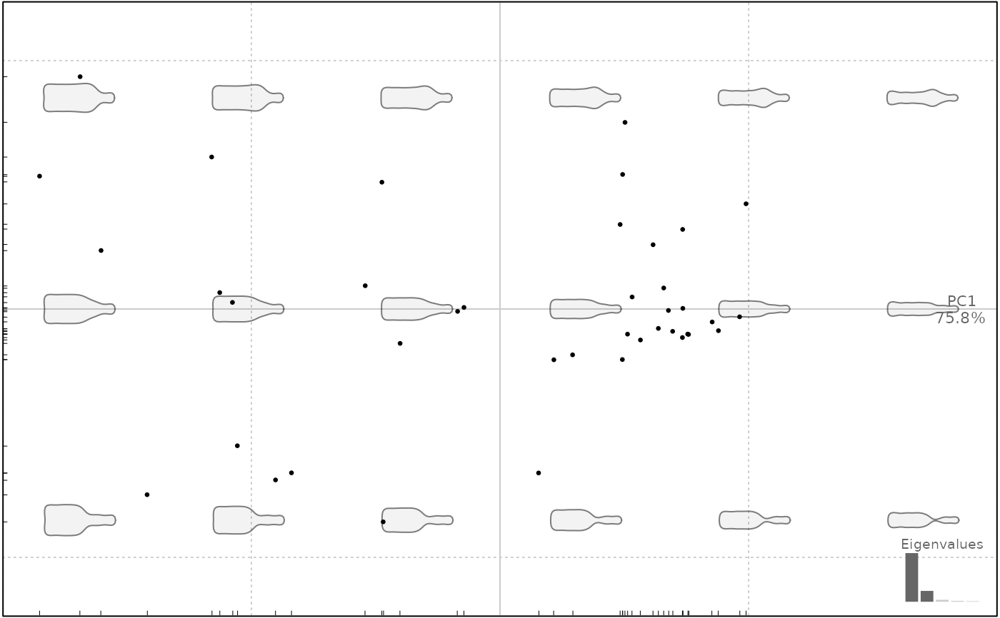
plot(bot.p, pos.shp="range")
#> will be deprecated soon, see ?plot_PCA
 plot(bot.p, pos.shp="xy")
#> will be deprecated soon, see ?plot_PCA
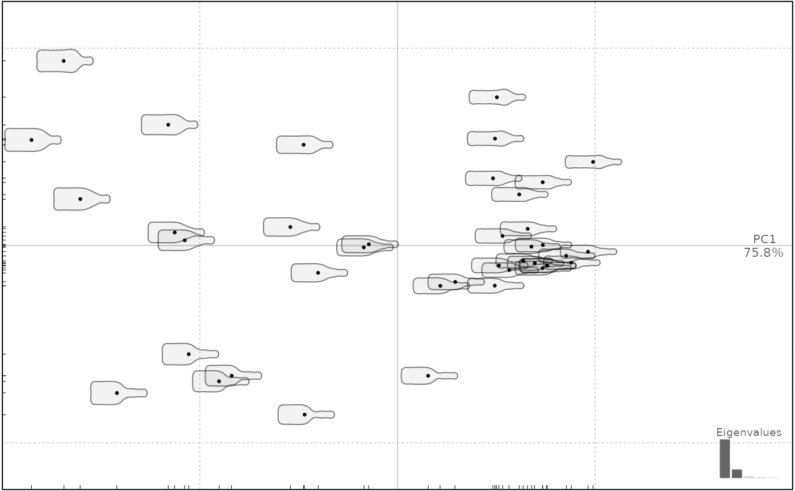
plot(bot.p, pos.shp="circle")
#> will be deprecated soon, see ?plot_PCA
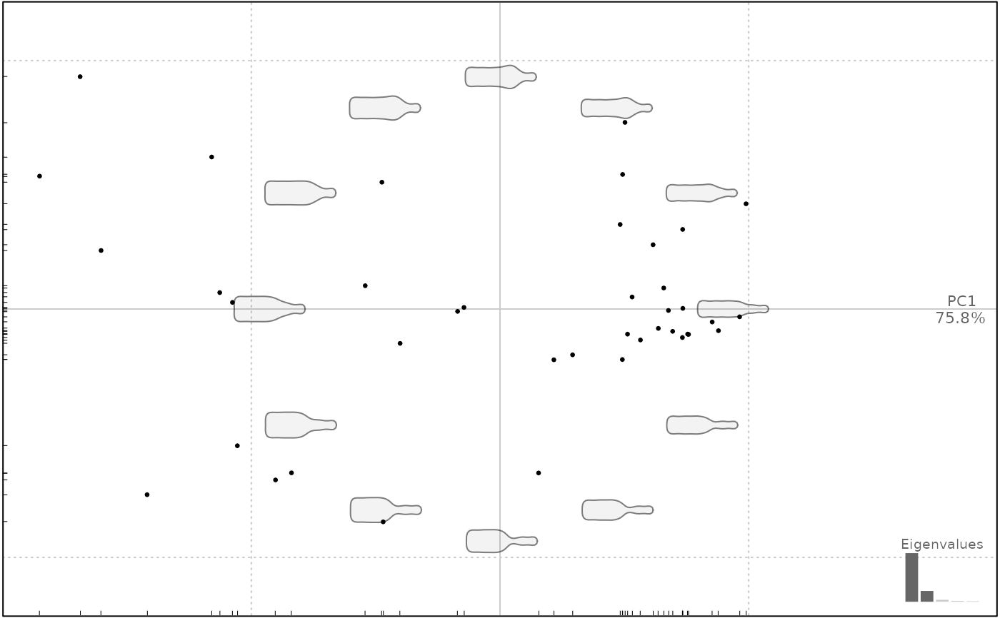
plot(bot.p, pos.shp="range_axes")
#> will be deprecated soon, see ?plot_PCA
plot(bot.p, pos.shp="full_axes")
#> will be deprecated soon, see ?plot_PCA
plot(bot.p, morpho=FALSE)
#> will be deprecated soon, see ?plot_PCA
### Passing factors to plot.PCA
# 3 equivalent methods
plot(bot.p, "type")
#> will be deprecated soon, see ?plot_PCA
plot(bot.p, 1)
#> will be deprecated soon, see ?plot_PCA
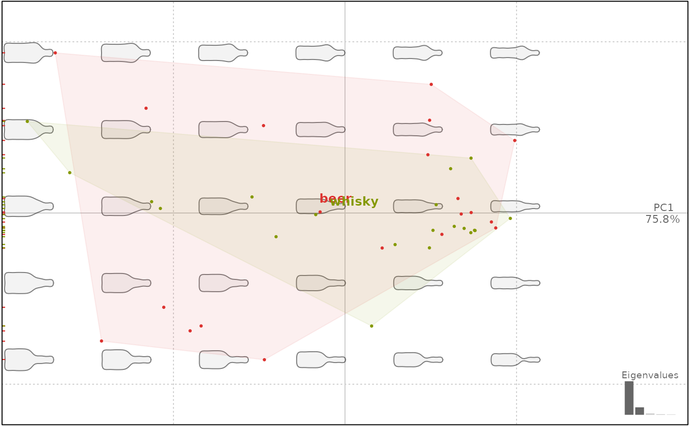
plot(bot.p, ~type)
#> will be deprecated soon, see ?plot_PCA
# let's create a dummy factor of the correct length
# and another added to the $fac with mutate
# and a numeric of the correct length
f <- factor(rep(letters[1:2], 20))
z <- factor(rep(LETTERS[1:2], 20))
bot %<>% mutate(cs=coo_centsize(.), z=z)
bp <- bot %>% efourier %>% PCA
#> 'norm=TRUE' is used and this may be troublesome. See ?efourier #Details
#> 'nb.h' set to 10 (99% harmonic power)
# so bp contains type, cs (numeric) and z; not f
# yet f can be passed on the fly
plot(bp, f)
#> will be deprecated soon, see ?plot_PCA
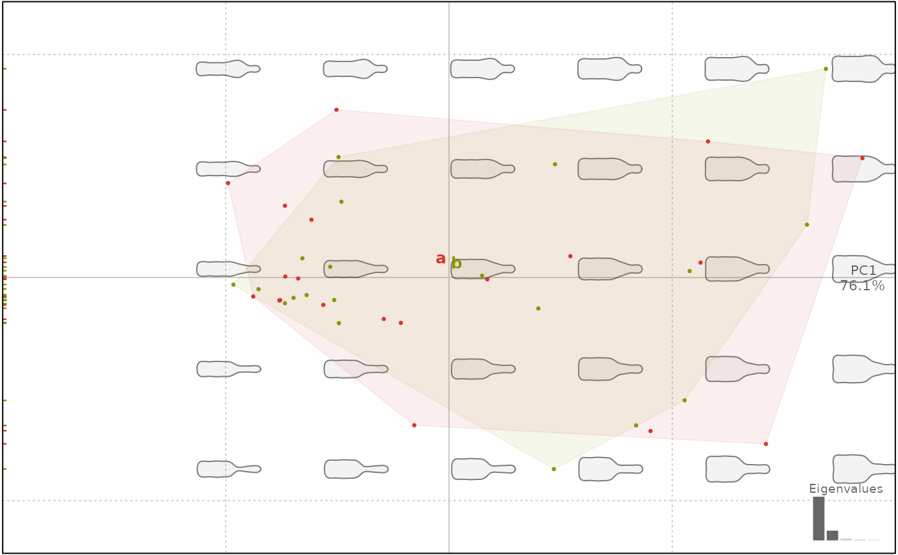
# numeric fac are allowed
plot(bp, "cs", cex=3, color.legend=TRUE)
#> will be deprecated soon, see ?plot_PCA
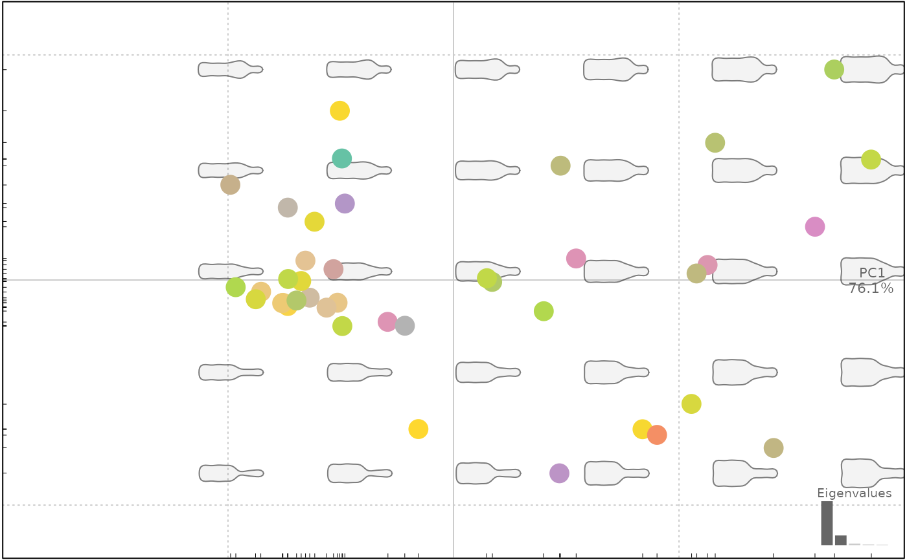
# formula allows combinations of factors
plot(bp, ~type+z)
#> will be deprecated soon, see ?plot_PCA
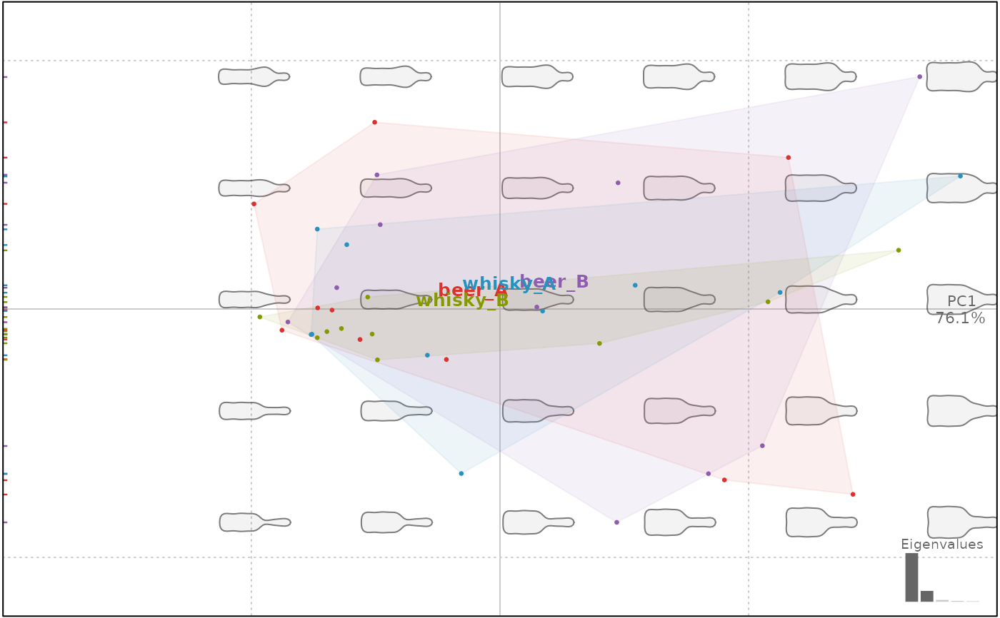
### other morphometric approaches works the same
# open curves
op <- npoly(olea, 5)
#> 'nb.pts' missing and set to: 91
op.p <- PCA(op)
op.p
#> A PCA object
#> --------------------
#> - 210 shapes
#> - $method: [ npoly analysis ]
#> # A tibble: 210 × 4
#> var domes view ind
#> <fct> <fct> <fct> <fct>
#> 1 Aglan cult VD O10
#> 2 Aglan cult VL O10
#> 3 Aglan cult VD O11
#> 4 Aglan cult VL O11
#> 5 Aglan cult VD O12
#> 6 Aglan cult VL O12
#> # ℹ 204 more rows
#> - All components: sdev, rotation, center, scale, x, eig, fac, mshape, method, mod, baseline1, baseline2, cuts.
plot(op.p, ~ domes + var, morpho=TRUE) # use of formula
#> will be deprecated soon, see ?plot_PCA
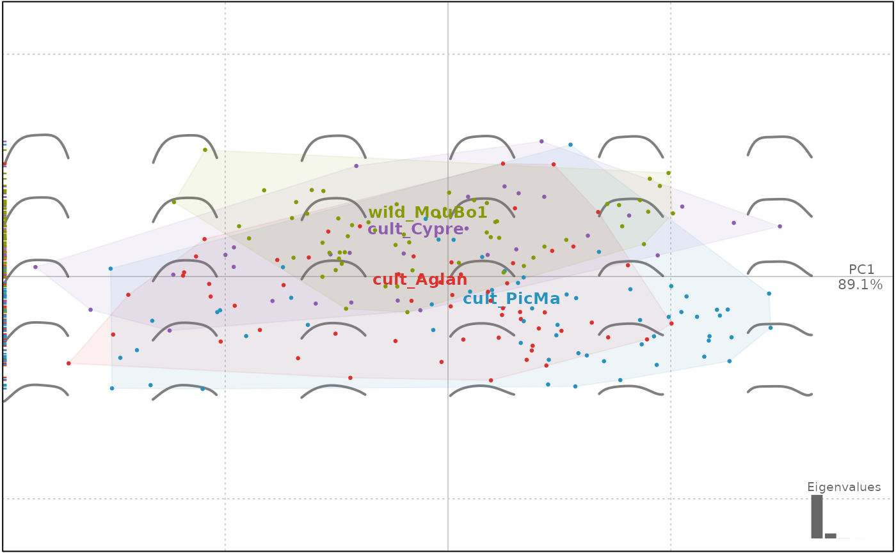
# landmarks
wp <- fgProcrustes(wings, tol=1e-4)
#> iteration: 1 gain: 53084
#> iteration: 2 gain: 0.1323
#> iteration: 3 gain: 0.056732
#> iteration: 4 gain: 0.00012401
#> iteration: 5 gain: 0.038609
#> iteration: 6 gain: 0.018221
#> iteration: 7 gain: 0.0014165
#> iteration: 8 gain: 6.1489e-06
wpp <- PCA(wp)
wpp
#> A PCA object
#> --------------------
#> - 127 shapes
#> - $method: [ procrustes analysis ]
#> # A tibble: 127 × 1
#> group
#> <fct>
#> 1 AN
#> 2 AN
#> 3 AN
#> 4 AN
#> 5 AN
#> 6 AN
#> # ℹ 121 more rows
#> - All components: sdev, rotation, center, scale, x, eig, fac, mshape, method, cuts, links.
plot(wpp, 1)
#> will be deprecated soon, see ?plot_PCA
plot(bot.p, pos.shp="xy")
#> will be deprecated soon, see ?plot_PCA
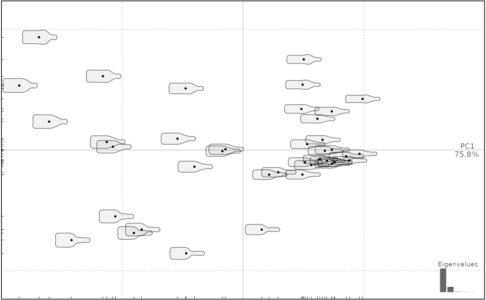
plot(bot.p, pos.shp="circle")
#> will be deprecated soon, see ?plot_PCA
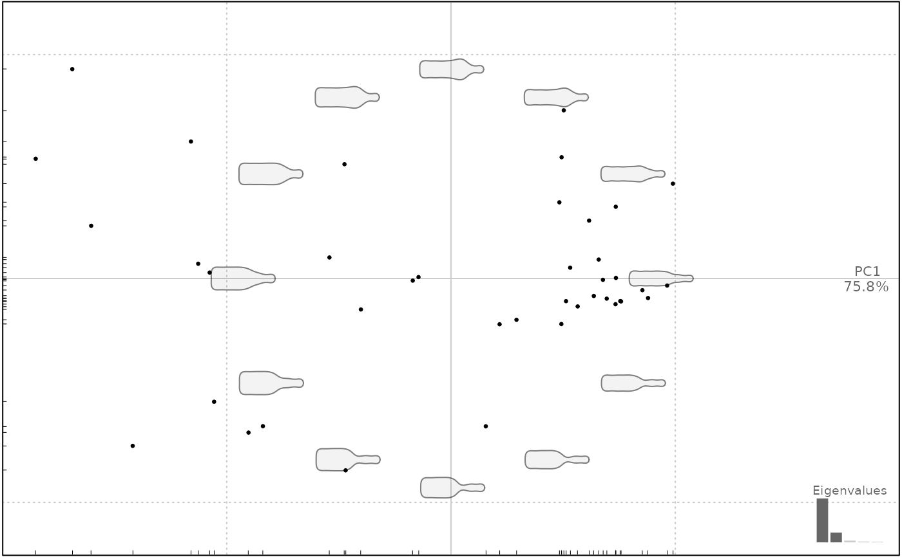
plot(bot.p, pos.shp="range_axes")
#> will be deprecated soon, see ?plot_PCA
plot(bot.p, pos.shp="full_axes")
#> will be deprecated soon, see ?plot_PCA
plot(bot.p, morpho=FALSE)
#> will be deprecated soon, see ?plot_PCA
### Passing factors to plot.PCA
# 3 equivalent methods
plot(bot.p, "type")
#> will be deprecated soon, see ?plot_PCA
plot(bot.p, 1)
#> will be deprecated soon, see ?plot_PCA
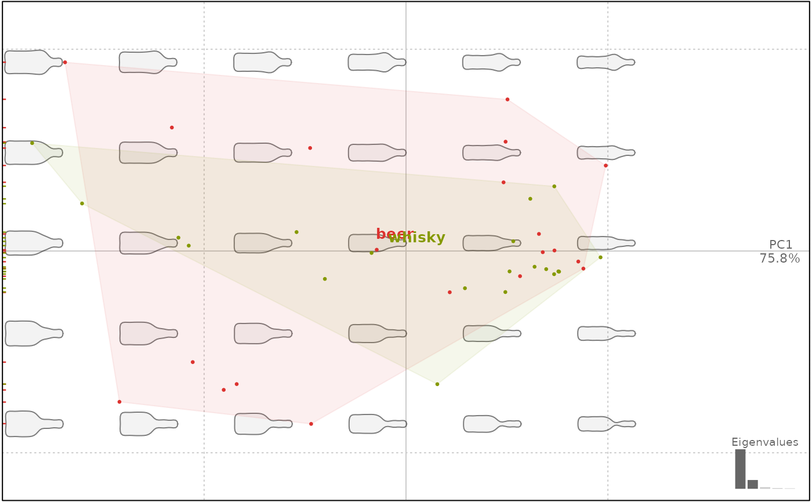
plot(bot.p, ~type)
#> will be deprecated soon, see ?plot_PCA
# let's create a dummy factor of the correct length
# and another added to the $fac with mutate
# and a numeric of the correct length
f <- factor(rep(letters[1:2], 20))
z <- factor(rep(LETTERS[1:2], 20))
bot %<>% mutate(cs=coo_centsize(.), z=z)
bp <- bot %>% efourier %>% PCA
#> 'norm=TRUE' is used and this may be troublesome. See ?efourier #Details
#> 'nb.h' set to 10 (99% harmonic power)
# so bp contains type, cs (numeric) and z; not f
# yet f can be passed on the fly
plot(bp, f)
#> will be deprecated soon, see ?plot_PCA
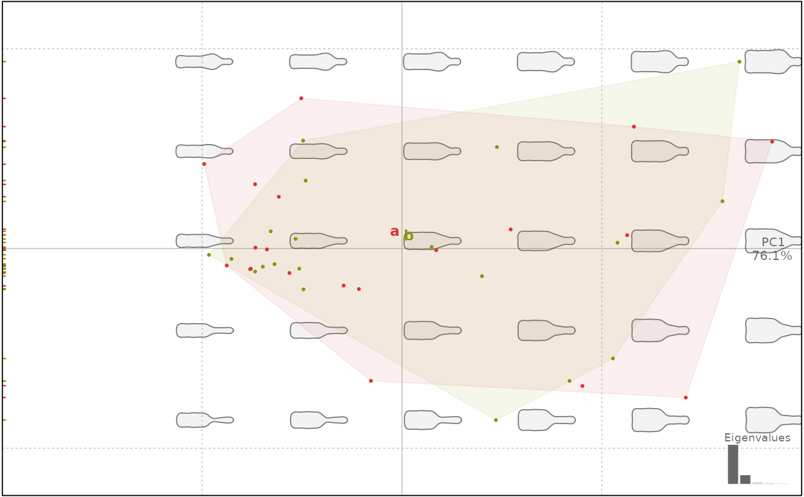
# numeric fac are allowed
plot(bp, "cs", cex=3, color.legend=TRUE)
#> will be deprecated soon, see ?plot_PCA
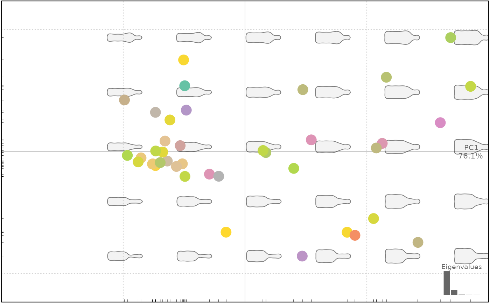
# formula allows combinations of factors
plot(bp, ~type+z)
#> will be deprecated soon, see ?plot_PCA
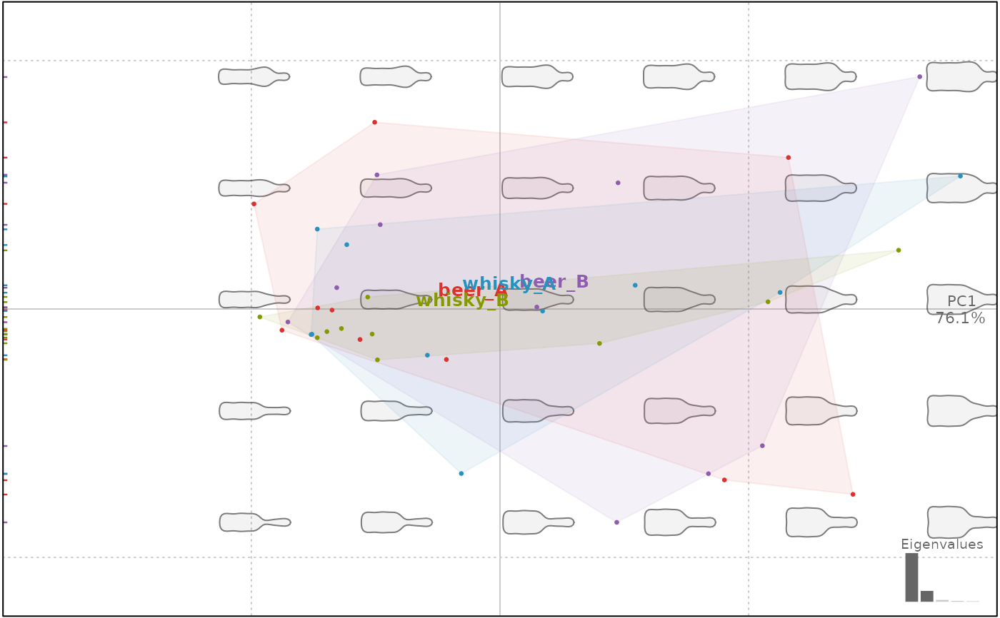
### other morphometric approaches works the same
# open curves
op <- npoly(olea, 5)
#> 'nb.pts' missing and set to: 91
op.p <- PCA(op)
op.p
#> A PCA object
#> --------------------
#> - 210 shapes
#> - $method: [ npoly analysis ]
#> # A tibble: 210 × 4
#> var domes view ind
#> <fct> <fct> <fct> <fct>
#> 1 Aglan cult VD O10
#> 2 Aglan cult VL O10
#> 3 Aglan cult VD O11
#> 4 Aglan cult VL O11
#> 5 Aglan cult VD O12
#> 6 Aglan cult VL O12
#> # ℹ 204 more rows
#> - All components: sdev, rotation, center, scale, x, eig, fac, mshape, method, mod, baseline1, baseline2, cuts.
plot(op.p, ~ domes + var, morpho=TRUE) # use of formula
#> will be deprecated soon, see ?plot_PCA
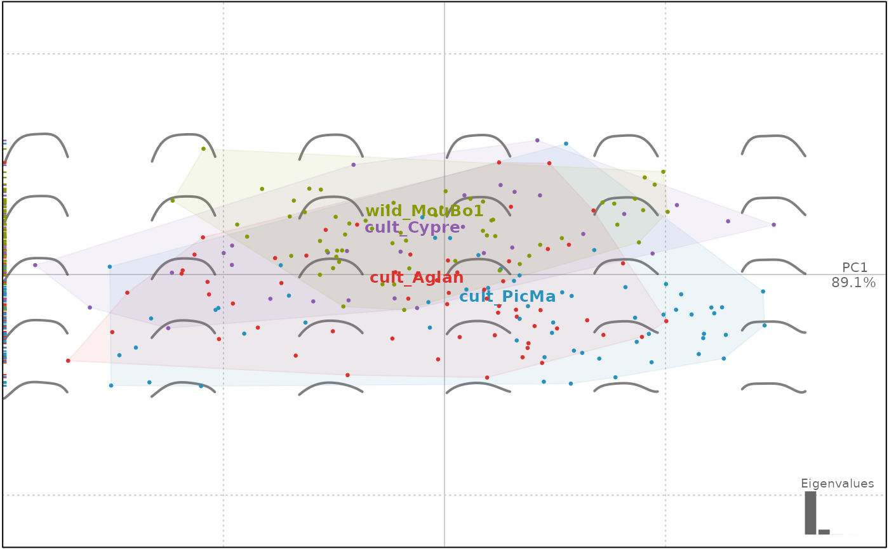
# landmarks
wp <- fgProcrustes(wings, tol=1e-4)
#> iteration: 1 gain: 53084
#> iteration: 2 gain: 0.1323
#> iteration: 3 gain: 0.056732
#> iteration: 4 gain: 0.00012401
#> iteration: 5 gain: 0.038609
#> iteration: 6 gain: 0.018221
#> iteration: 7 gain: 0.0014165
#> iteration: 8 gain: 6.1489e-06
wpp <- PCA(wp)
wpp
#> A PCA object
#> --------------------
#> - 127 shapes
#> - $method: [ procrustes analysis ]
#> # A tibble: 127 × 1
#> group
#> <fct>
#> 1 AN
#> 2 AN
#> 3 AN
#> 4 AN
#> 5 AN
#> 6 AN
#> # ℹ 121 more rows
#> - All components: sdev, rotation, center, scale, x, eig, fac, mshape, method, cuts, links.
plot(wpp, 1)
#> will be deprecated soon, see ?plot_PCA
 ### Cosmetic options
# window
plot(bp, 1, zoom=2)
#> will be deprecated soon, see ?plot_PCA
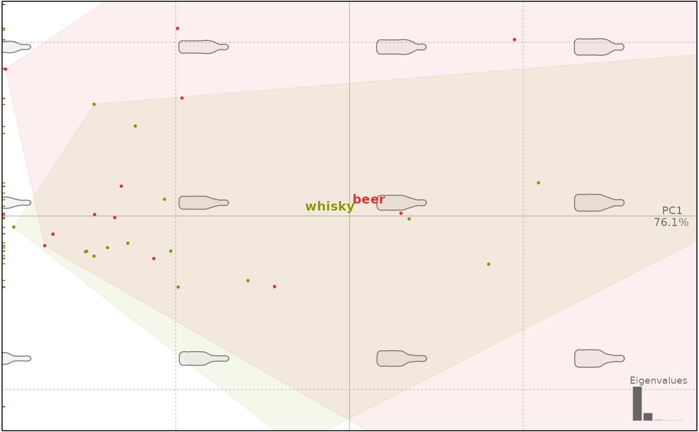
plot(bp, zoom=0.5)
#> will be deprecated soon, see ?plot_PCA
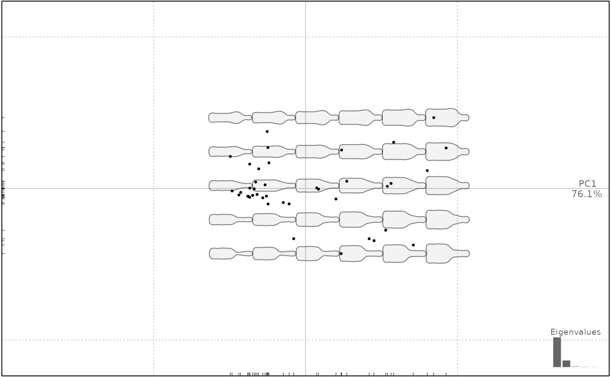
plot(bp, center.origin=FALSE, grid=FALSE)
#> will be deprecated soon, see ?plot_PCA
# colors
plot(bp, col="red") # globally
#> will be deprecated soon, see ?plot_PCA
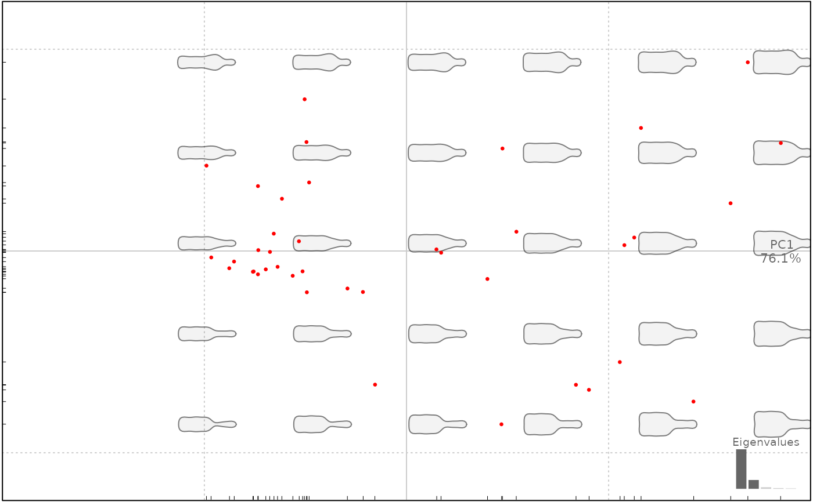
plot(bp, 1, col=c("#00FF00", "#0000FF")) # for every level
#> will be deprecated soon, see ?plot_PCA
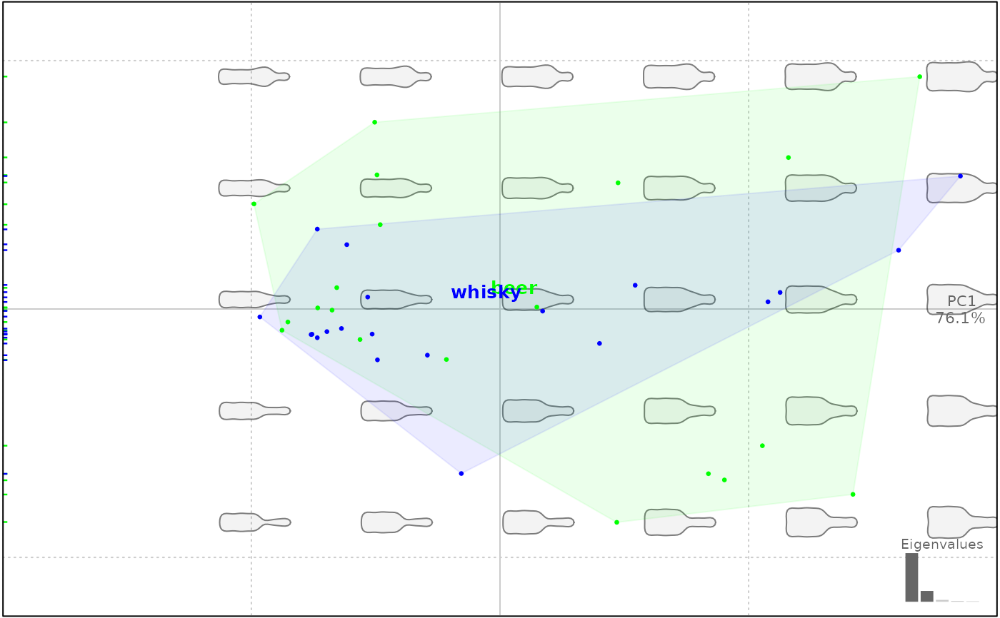
# a color vector of the right length
plot(bp, 1, col=rep(c("#00FF00", "#0000FF"), each=20))
#> will be deprecated soon, see ?plot_PCA
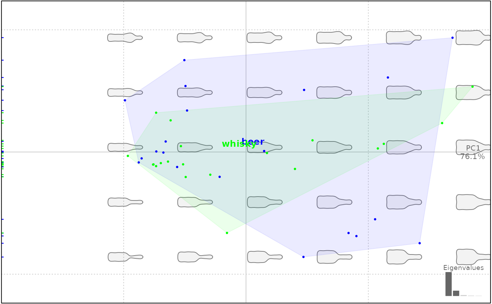
# a color vector of the right length, mixign Rcolor names (not a good idea though)
plot(bp, 1, col=rep(c("#00FF00", "forestgreen"), each=20))
#> will be deprecated soon, see ?plot_PCA
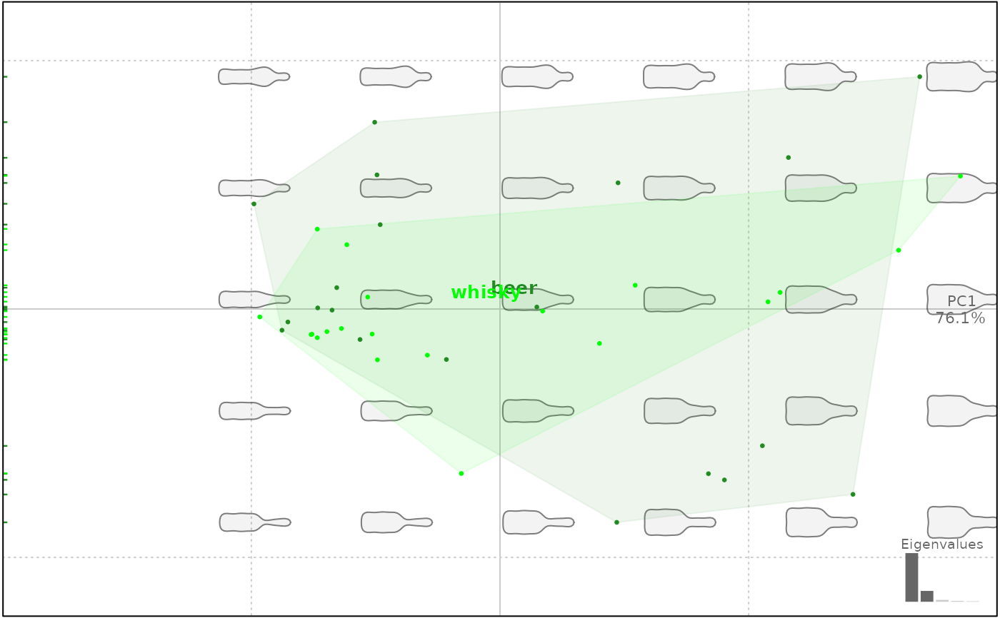
# ellipses
plot(bp, 1, conf.ellipsesax=2/3)
#> will be deprecated soon, see ?plot_PCA
plot(bp, 1, ellipsesax=FALSE)
#> will be deprecated soon, see ?plot_PCA
plot(bp, 1, ellipsesax=TRUE, ellipses=TRUE)
#> will be deprecated soon, see ?plot_PCA
# stars
plot(bp, 1, stars=TRUE, ellipsesax=FALSE)
#> will be deprecated soon, see ?plot_PCA
# convex hulls
plot(bp, 1, chull=TRUE)
#> will be deprecated soon, see ?plot_PCA
plot(bp, 1, chull.lty=3)
#> will be deprecated soon, see ?plot_PCA
# filled convex hulls
plot(bp, 1, chull.filled=TRUE)
#> will be deprecated soon, see ?plot_PCA
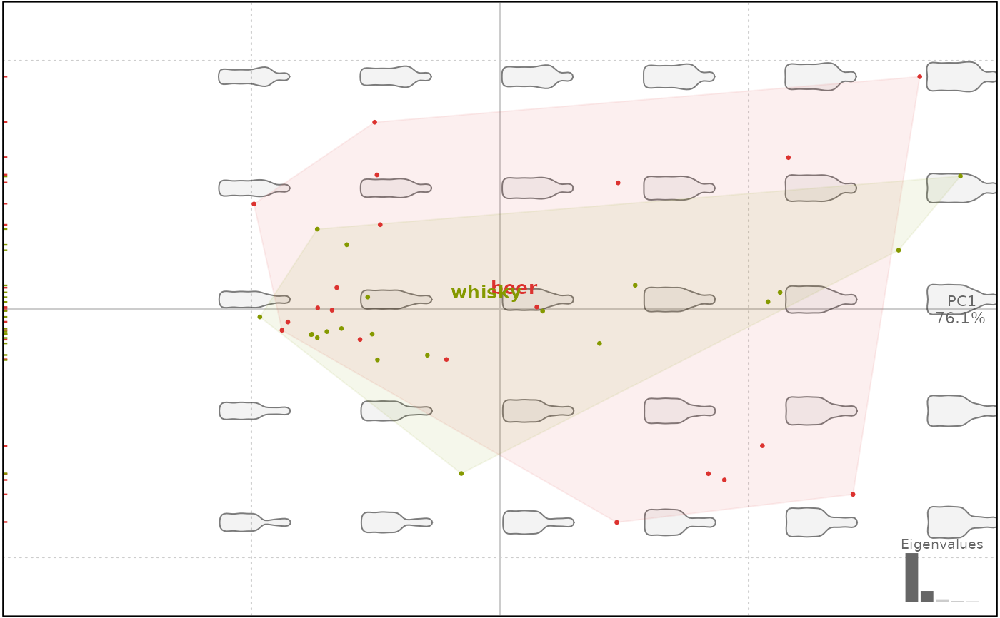
plot(bp, 1, chull.filled.alpha = 0.8, chull.lty =1) # you can omit chull.filled=TRUE
#> will be deprecated soon, see ?plot_PCA
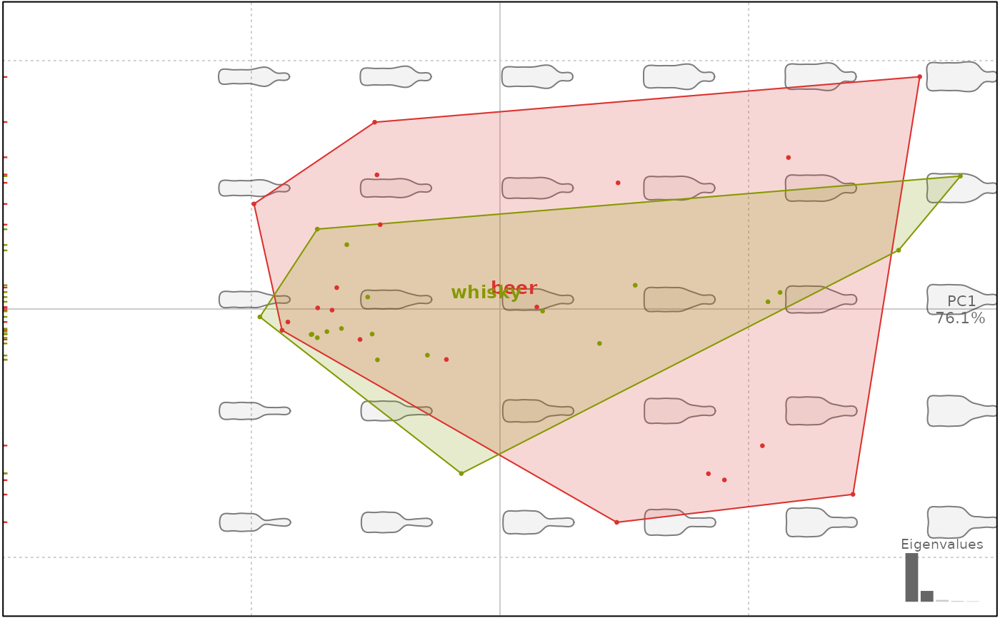
# density kernel
plot(bp, 1, density=TRUE, contour=TRUE, lev.contour=10)
#> will be deprecated soon, see ?plot_PCA
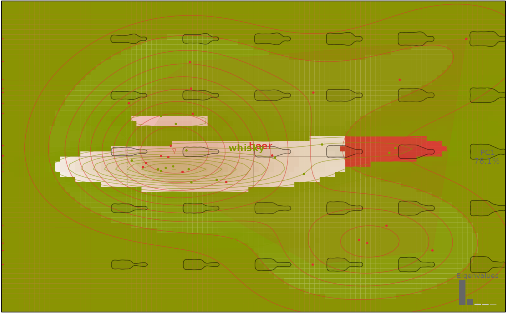
# delaunay
plot(bp, 1, delaunay=TRUE)
#> will be deprecated soon, see ?plot_PCA
# loadings
flower %>% PCA %>% plot(1, loadings=TRUE)
#> will be deprecated soon, see ?plot_PCA
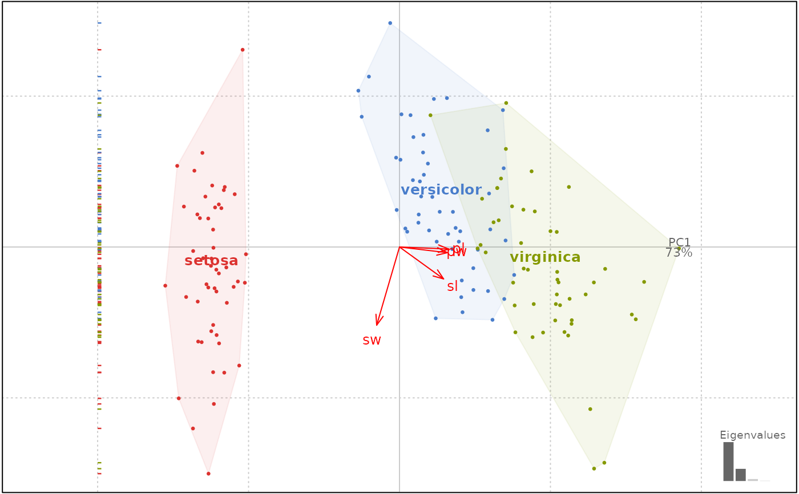
# point/group labelling
plot(bp, 1, labelspoint=TRUE) # see options for abbreviations
#> will be deprecated soon, see ?plot_PCA
### Cosmetic options
# window
plot(bp, 1, zoom=2)
#> will be deprecated soon, see ?plot_PCA
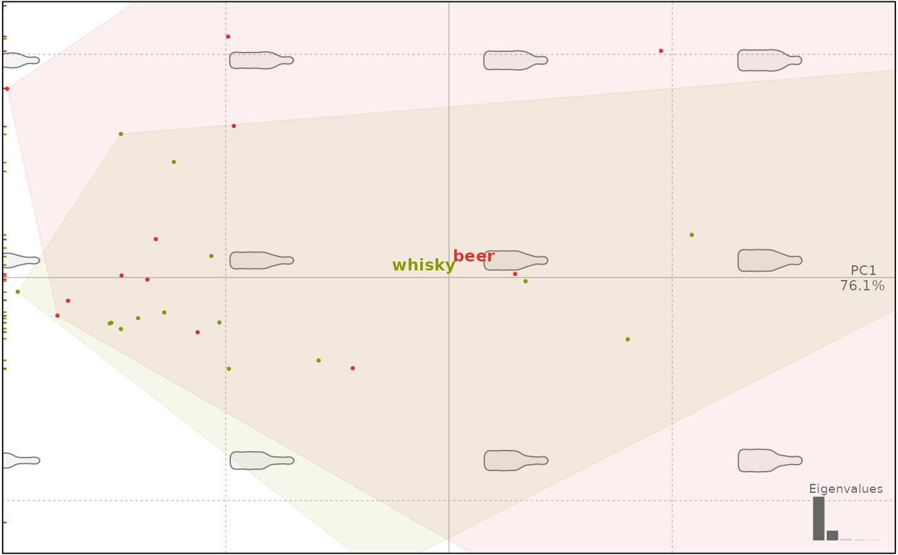
plot(bp, zoom=0.5)
#> will be deprecated soon, see ?plot_PCA
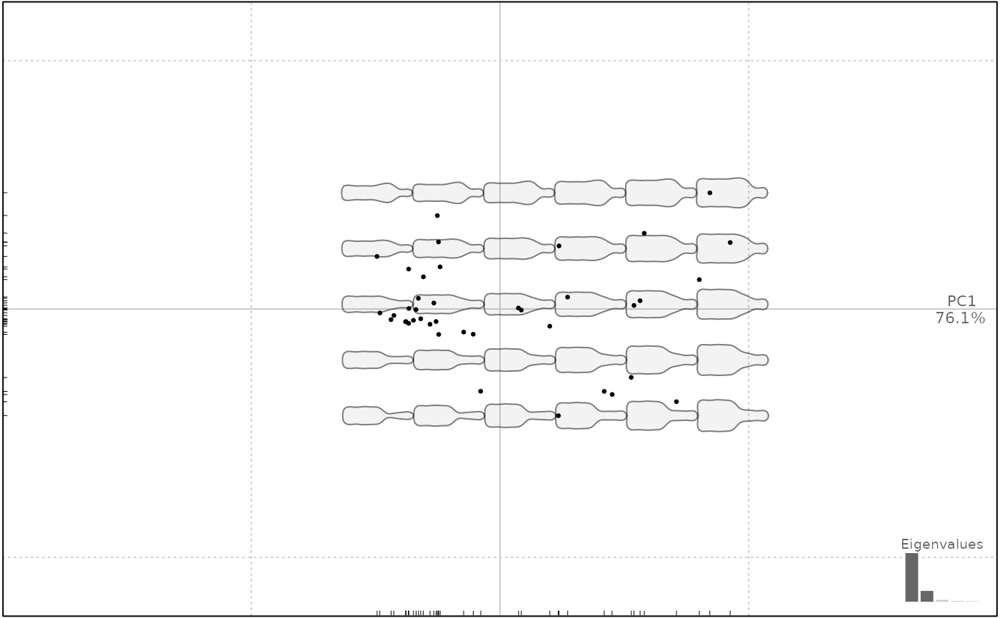
plot(bp, center.origin=FALSE, grid=FALSE)
#> will be deprecated soon, see ?plot_PCA
# colors
plot(bp, col="red") # globally
#> will be deprecated soon, see ?plot_PCA
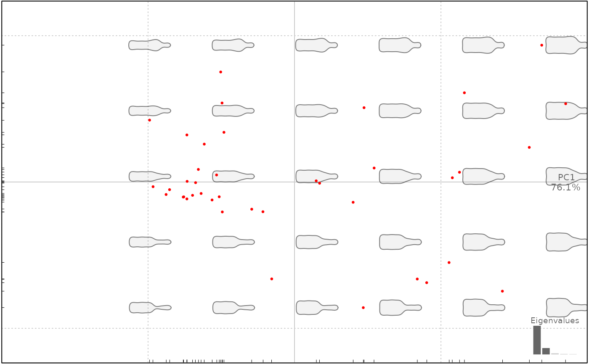
plot(bp, 1, col=c("#00FF00", "#0000FF")) # for every level
#> will be deprecated soon, see ?plot_PCA
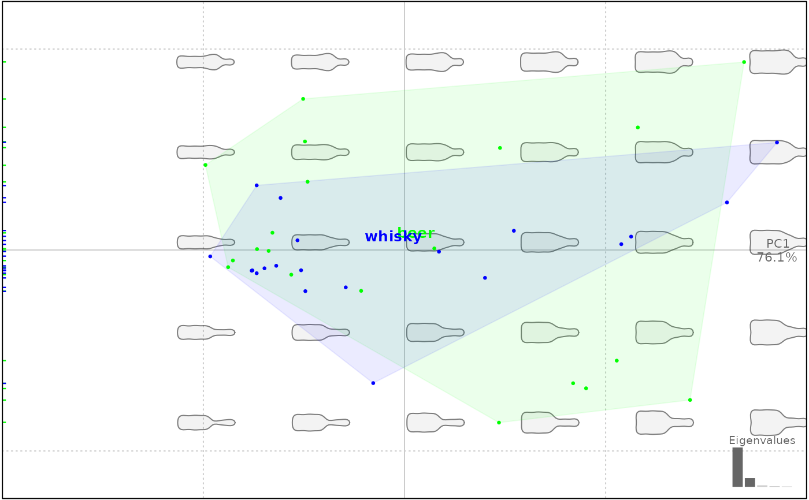
# a color vector of the right length
plot(bp, 1, col=rep(c("#00FF00", "#0000FF"), each=20))
#> will be deprecated soon, see ?plot_PCA
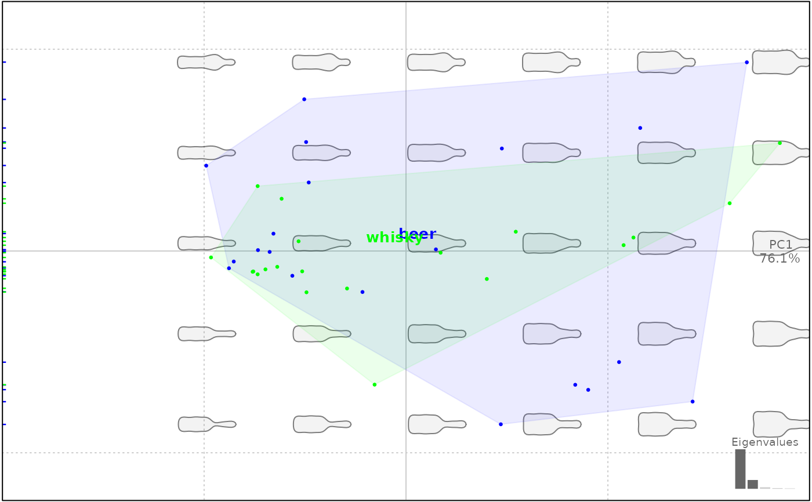
# a color vector of the right length, mixign Rcolor names (not a good idea though)
plot(bp, 1, col=rep(c("#00FF00", "forestgreen"), each=20))
#> will be deprecated soon, see ?plot_PCA
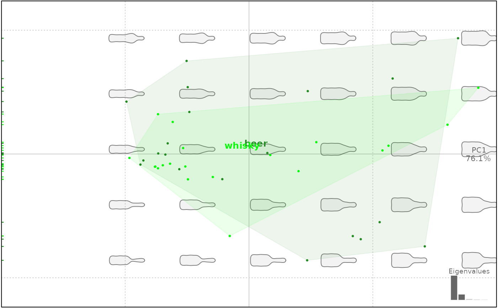
# ellipses
plot(bp, 1, conf.ellipsesax=2/3)
#> will be deprecated soon, see ?plot_PCA
plot(bp, 1, ellipsesax=FALSE)
#> will be deprecated soon, see ?plot_PCA
plot(bp, 1, ellipsesax=TRUE, ellipses=TRUE)
#> will be deprecated soon, see ?plot_PCA
# stars
plot(bp, 1, stars=TRUE, ellipsesax=FALSE)
#> will be deprecated soon, see ?plot_PCA
# convex hulls
plot(bp, 1, chull=TRUE)
#> will be deprecated soon, see ?plot_PCA
plot(bp, 1, chull.lty=3)
#> will be deprecated soon, see ?plot_PCA
# filled convex hulls
plot(bp, 1, chull.filled=TRUE)
#> will be deprecated soon, see ?plot_PCA
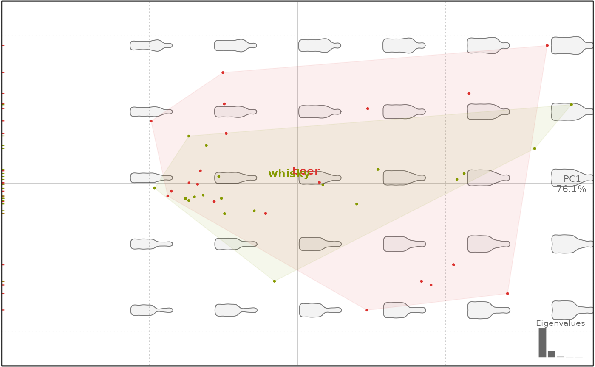
plot(bp, 1, chull.filled.alpha = 0.8, chull.lty =1) # you can omit chull.filled=TRUE
#> will be deprecated soon, see ?plot_PCA
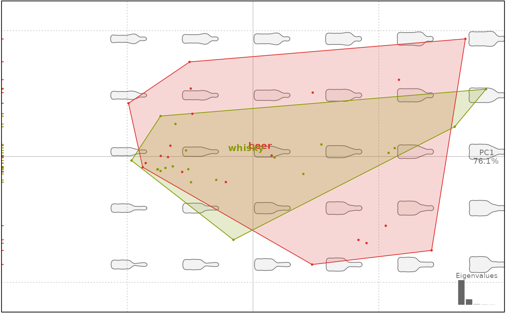
# density kernel
plot(bp, 1, density=TRUE, contour=TRUE, lev.contour=10)
#> will be deprecated soon, see ?plot_PCA
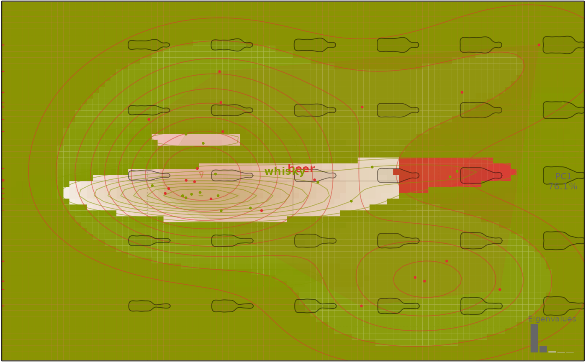
# delaunay
plot(bp, 1, delaunay=TRUE)
#> will be deprecated soon, see ?plot_PCA
# loadings
flower %>% PCA %>% plot(1, loadings=TRUE)
#> will be deprecated soon, see ?plot_PCA
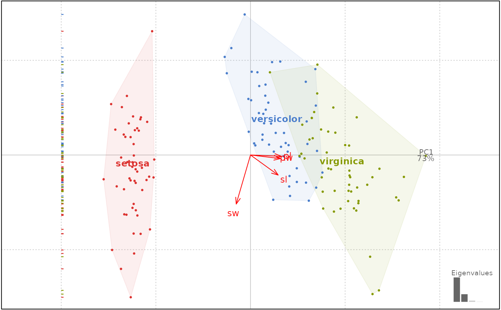
# point/group labelling
plot(bp, 1, labelspoint=TRUE) # see options for abbreviations
#> will be deprecated soon, see ?plot_PCA
 plot(bp, 1, labelsgroup=TRUE) # see options for abbreviations
#> will be deprecated soon, see ?plot_PCA
# clean axes, no rug, no border, random title
plot(bp, axisvar=FALSE, axisnames=FALSE, rug=FALSE, box=FALSE, title="random")
#> will be deprecated soon, see ?plot_PCA
plot(bp, 1, labelsgroup=TRUE) # see options for abbreviations
#> will be deprecated soon, see ?plot_PCA
# clean axes, no rug, no border, random title
plot(bp, axisvar=FALSE, axisnames=FALSE, rug=FALSE, box=FALSE, title="random")
#> will be deprecated soon, see ?plot_PCA
 # no eigen
plot(bp, eigen=FALSE) # eigen cause troubles to graphical window
#> will be deprecated soon, see ?plot_PCA
# no eigen
plot(bp, eigen=FALSE) # eigen cause troubles to graphical window
#> will be deprecated soon, see ?plot_PCA
 # eigen may causes troubles to the graphical window. you can try old.par = TRUE
# }
# eigen may causes troubles to the graphical window. you can try old.par = TRUE
# }